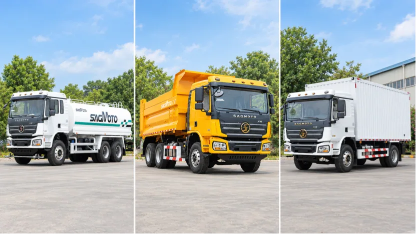

The X5 Pro is described in the supplied SAGMOTO platform material as an upgrade built on the X5 cab's basic structure, with further exterior, interior and comfort equipment planned for selected markets. For fleet procurement, the important question is not whether a feature appears in a model overview, but whether it is available and included on the exact vehicle being specified.
Compare the duty, not just the trim name
Start with the driver's working pattern: shift length, overnight routes, number of occupants and expected time in the cab. A high roof or sleeper arrangement may matter on longer routes; climate control, seat suspension and steering adjustment may be more relevant to daily comfort. Cameras and visibility aids should be assessed against vehicle body shape and operating environment.
Then compare service support. Confirm where replacement parts and service knowledge will come from, and whether the fleet prefers to standardize cab equipment across vehicles. A more highly equipped cab is useful only when its features suit the work and can be maintained over the operating life.
Features in the current platform plan
The X5 Pro planning list includes possible features such as a high-roof cab, front and rear air cab suspension, air-suspension driver's seat, automatic climate control, multifunction steering wheel, color instrument display, larger multimedia screen, 360-degree view and reversing camera, LED lighting and electric cab tilting. Treat this as a list of discussed options, not a claim that every X5 Pro has them as standard.
Request an itemized equipment list for the destination and configuration. Clarify which items are included, optional, unavailable or substituted. Ask the supplier to identify the exact cab and chassis variant on the technical specification, then verify it during inspection.

Keep cab and chassis decisions connected
Cab selection does not replace decisions about engine packaging, floor layout, steering side, emissions, body equipment or route. The platform information describes different floor arrangements depending on the engine package, and the final model configuration should be checked against the current technical file. For vocational trucks, also confirm cab access, visibility around the installed body and the placement of equipment controls.
Questions to include in a cab RFQ
- Destination and exact X5 or X5 Pro variant under consideration
- Required roof, sleeper and seating arrangement
- Seat type, climate control and driver-adjustment requirements
- Camera, display, lighting and cab-suspension requirements
- Left- or right-hand steering and language requirements
- Service and spare-parts support expectations
- Written standard-versus-optional equipment schedule for inspection
FAQ
Does X5 Pro guarantee a fixed equipment package?
No. The current material says availability depends on product planning and order configuration. Get the exact equipment list in writing.
Is X5 Pro intended for every market?
The supplied material describes it as planned for selected markets. Confirm current availability for the destination.
How should a buyer verify the selected cab?
Match the written vehicle specification, equipment schedule and inspection checklist to the vehicle and delivered unit.
Confirm an X5 cab configuration
Share your destination, driver duty and required cab equipment for a current-availability check.
Submit requirements · WhatsApp +86 185 9197 6330 · X5 platform overview